우체통 · 지도 · 엽서
여권은 빼고 우편의 세 가지 사물로 다시 만들었다. 색은 셋 모두 H안 문서의 네 가지(우체통 빨강·청회색·편지 크림·먹)로 맞췄다. 시안마다 로고, 인스타 프로필, 인스타 표지(4:5), 우표첩 화면, 도장 6종이 한 벌이다. 로고·도장은 ChatGPT(투명 배경), 나머지는 Gemini로 만들었고 한글과 pica는 모두 HTML로 얹었다.
빨간 우체통
빨간 우체통 위에 까치가 엽서를 물고 앉아 있다. 모양 하나로 "소식이 모이는 곳"이 읽힌다. 우표첩은 우체통 문을 연 안쪽이다.
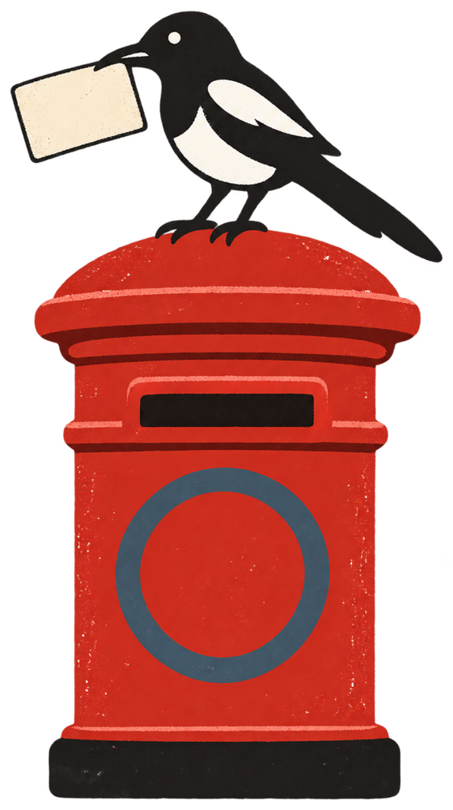
pica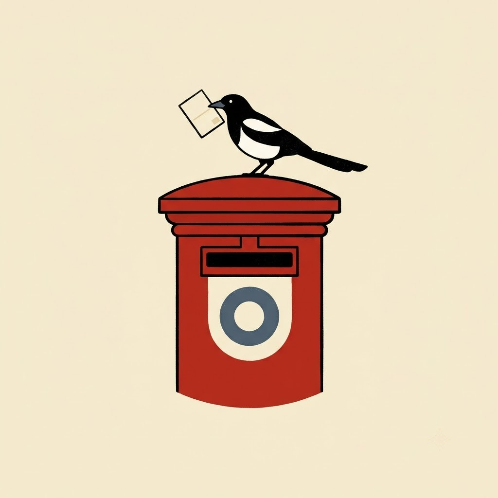
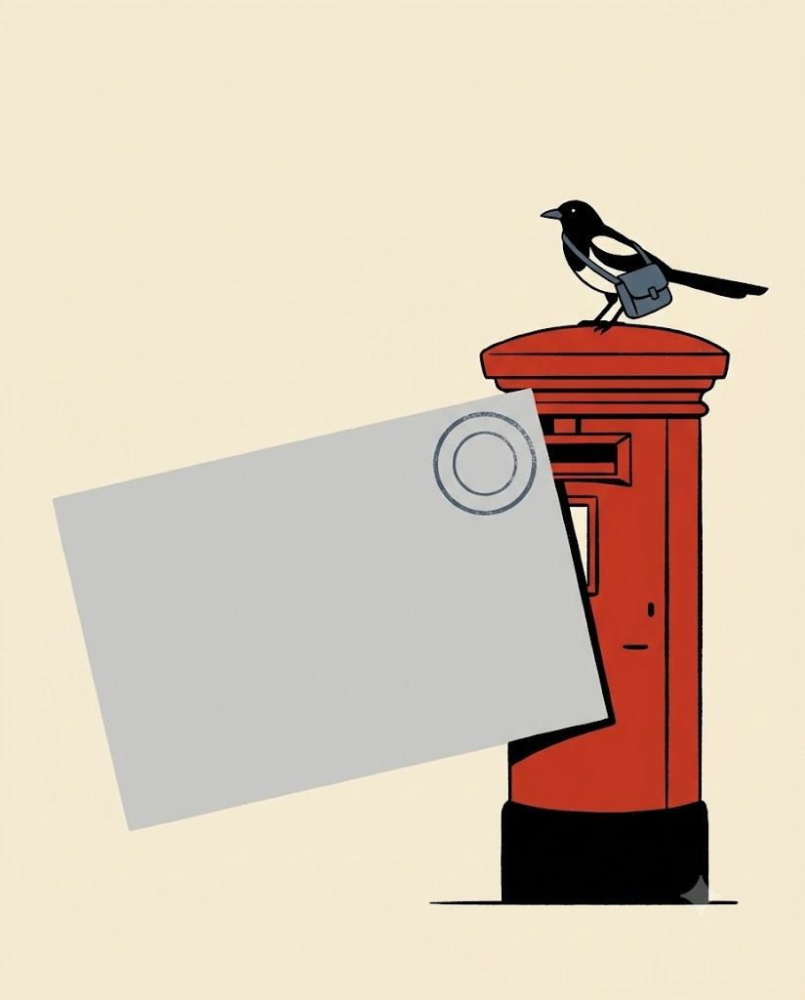
이번 주, 어디 가지?11.08 토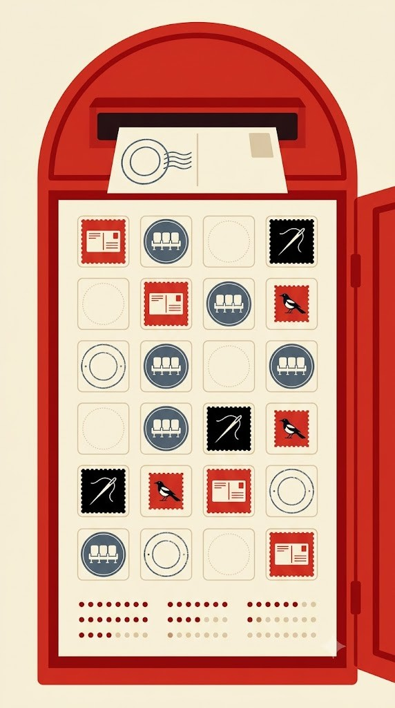
내 우표첩 · 11월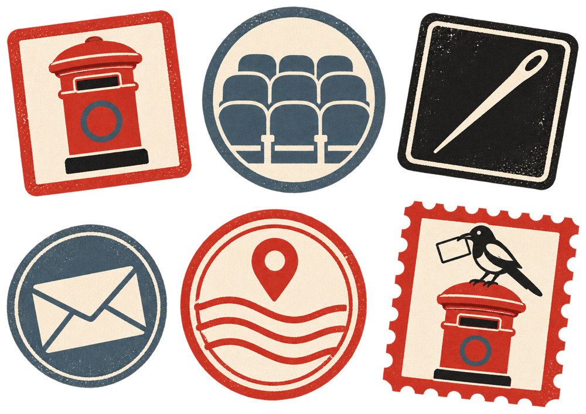
- 셋 중 아이콘 힘이 가장 세다. 프로필·파비콘으로 작게 줄여도 읽힌다.
- "소식을 넣는 곳, 꺼내는 곳"이라 제보(넣기)와 구독(받기)을 한 그림으로 설명한다.
- 빨간 원통 우체통은 영국 우체통 인상이 강하다. 한국 우체통 모양(사각 몸체)으로 다시 그릴지 정해야 한다.
- 실제 우정 마크·로고는 넣지 않는다.
- 로고·프로필·앱 아이콘, 릴스 오프닝(우체통이 열리며 소식 도착)
동네 배달 지도
위에서 내려다본 동네 지도에 까치의 배달 경로가 점선으로 지나간다. 우표첩이 곧 지도라서, 다녀온 동네에 도장이 찍히고 아직 안 간 곳은 빈 원으로 남는다.
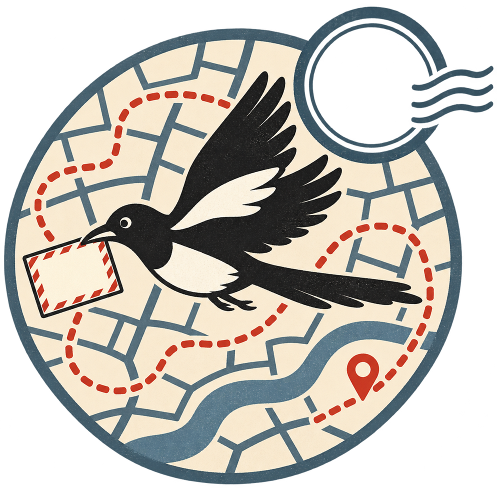
pica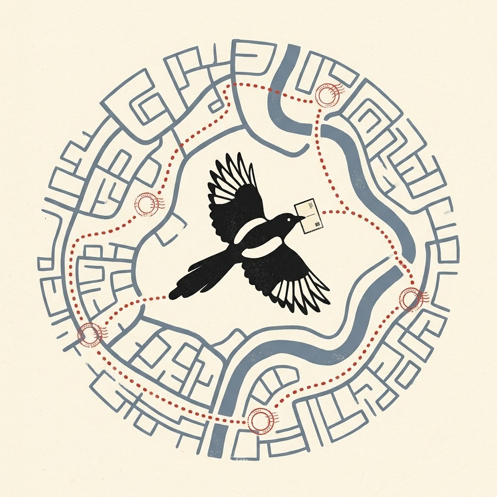
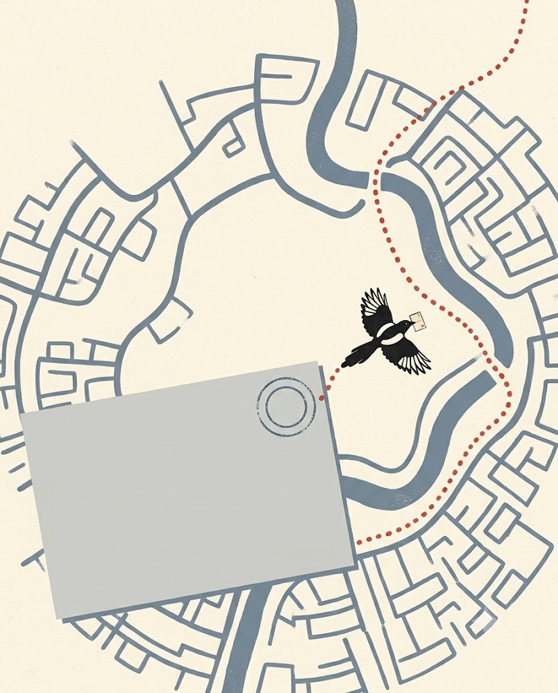
이번 주, 어디 가지?11.08 우리 동네 도장 지도 · 11월
우리 동네 도장 지도 · 11월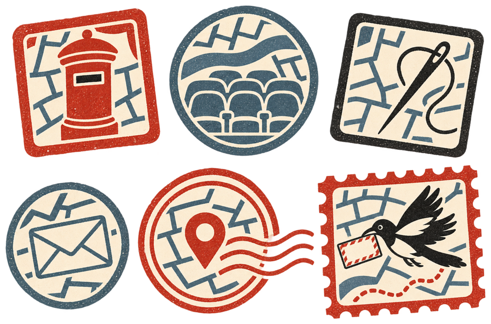
- 수집이 "어디를 다녀왔나"로 보인다. 시군 세트(우리 동네 세 곳·동네 멀리 가기)와 현장 소인이 그대로 화면이 된다.
- 지역명을 쓰지 않고도 "동네"를 말할 수 있다.
- 지도 선이 많아 표지 위 글자가 묻힌다. 제목에 바탕 띠가 필요하다.
- 실제 지도를 쓰면 저작권·정확도 문제가 생긴다. 그림 지도로만 쓴다.
- 앱 우표첩·세트 진행 화면, 주간 "이번 주 배달 목록"
엽서 한 장
모든 소식을 엽서 한 장으로 보낸다. 항공우편 줄무늬 테두리, 우표, 소인. 카드뉴스 앞면은 포스터, 뒷면은 주소 칸에 정보가 들어간다.
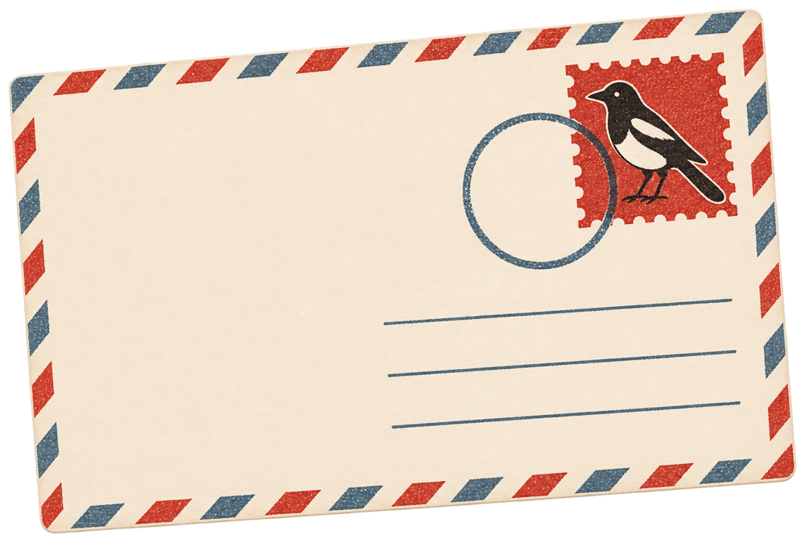
pica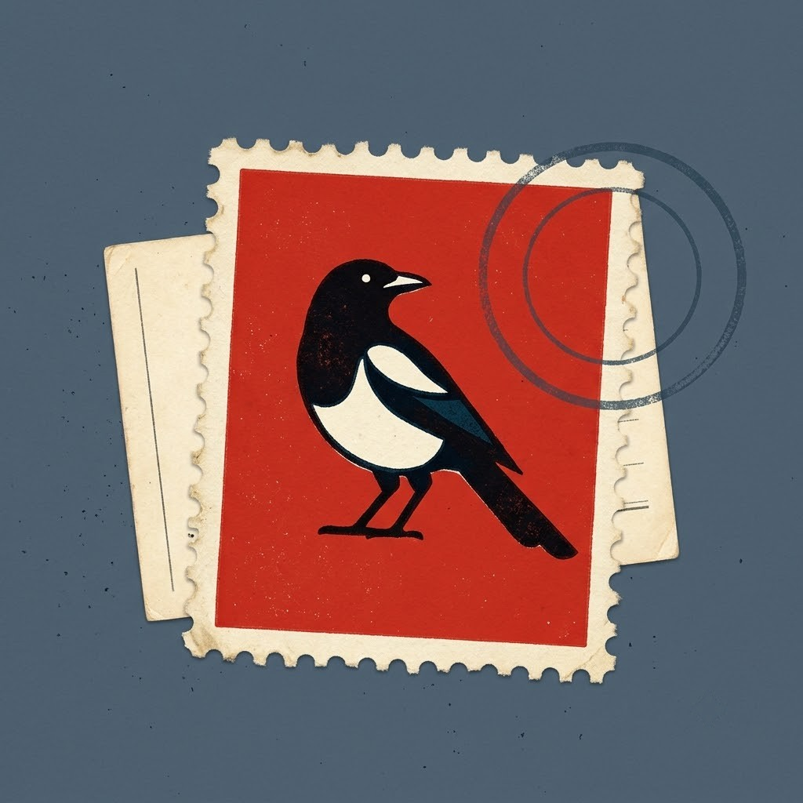
 이번 주, 어디 가지?11.08 토
이번 주, 어디 가지?11.08 토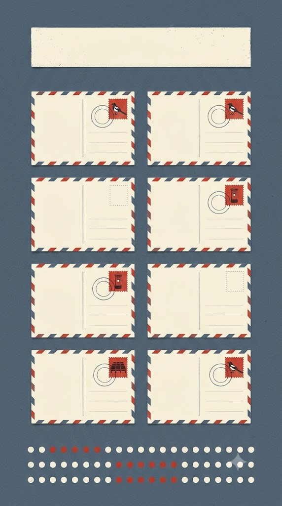
11월에 받은 엽서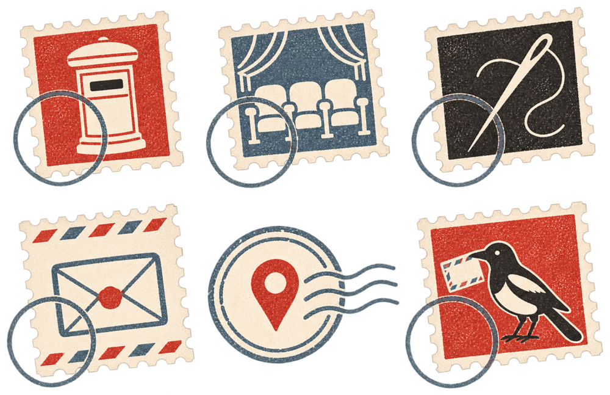
- 게시물 형식(카드뉴스 앞·뒷면)과 가장 잘 맞는다. 정보 칸이 자연스럽게 생긴다.
- 항공우편 줄무늬 하나로 멀리서도 알아본다.
- 엽서·항공우편은 흔한 소재라 로고만 보면 개성이 약하다.
- 항공우편 줄무늬는 H안 문서에서 "마감 임박에만" 쓰기로 했던 장치다. 상시로 쓰면 규칙을 바꿔야 한다.
- 인스타 카드뉴스, 소식지, 실물 엽서 굿즈
비교
| 기준 | A 빨간 우체통 | B 동네 배달 지도 | C 엽서 한 장 |
|---|---|---|---|
| 작은 크기 아이콘 | 가장 셈 | 선이 뭉침 | 우표만 크게 |
| 모으는 재미 | 칸 채우기 | 동네 채우기 | 엽서 모으기 |
| 게시물 형식 | 릴스 오프닝 | 주간 배달 목록 | 카드뉴스 앞·뒷면 |
| 세트 연결 | 활동 세트 | 시군·현장 소인 세트가 그대로 화면 | 분야 세트 |
| 주의 | 영국식 원통형 인상, 한국 우체통으로 다시 그릴지 | 표지 글자 가독성, 실제 지도 금지 | 항공우편 줄무늬 상시 사용 여부 |
추천: 셋을 역할로 나눠 함께 쓴다
세 시안은 같은 색과 같은 도장을 쓰므로 하나를 고르기보다 자리를 나누는 편이 낫다. 로고·프로필은 A 우체통(작게 줄여도 읽힌다), 앱 우표첩은 B 지도(다녀온 동네에 도장이 찍혀 모으는 재미가 가장 크다), 인스타 카드뉴스는 C 엽서(앞면 포스터, 뒷면 정보).
이야기는 하나로 이어진다. 까치가 우체통에서 소식을 꺼내, 동네 지도를 따라, 엽서로 배달한다. 도장 6종은 셋 중 한 판(A 또는 C)으로 통일한다.
모든 이미지는 AI 시안이다(로고·도장 1254~1536px, 나머지 1024px). Gemini 이미지의 ✦ 워터마크는 프로필에서는 지웠고(원형으로 자르면 어차피 보이지 않는 자리), 표지 3장에는 오른쪽 아래에 흐리게 남아 있다. 지도·선 위에 겹쳐 있어 지우면 그림이 뭉개졌기 때문이다. 확정한 시안은 사람이 벡터로 다시 그리고, 한글은 지금처럼 이미지 밖에서 얹는다. 날짜는 예시다.